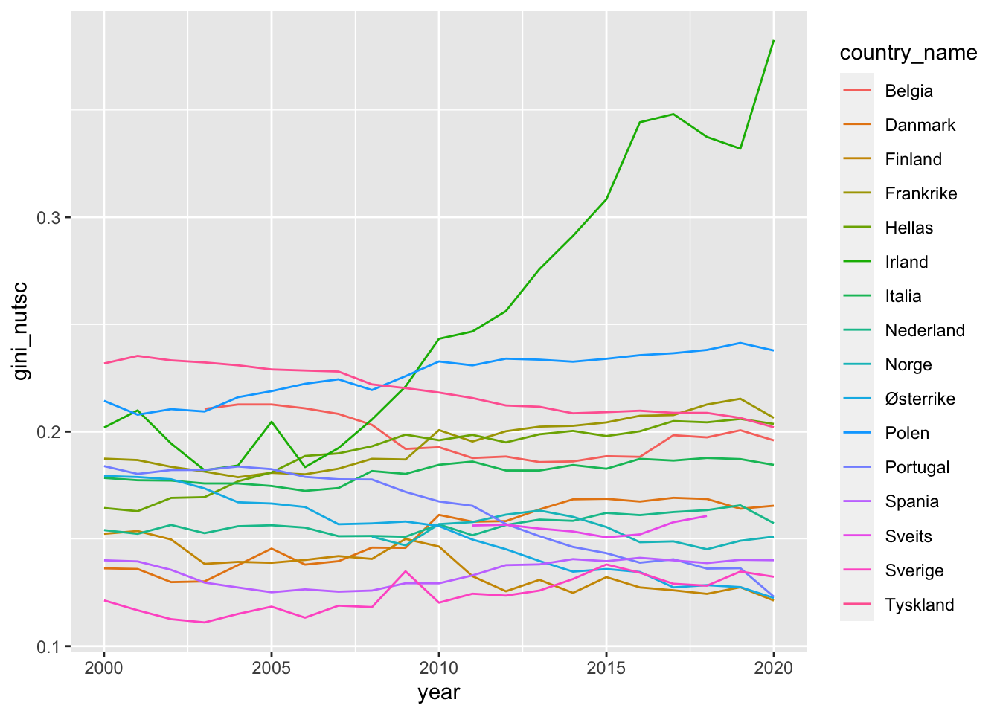
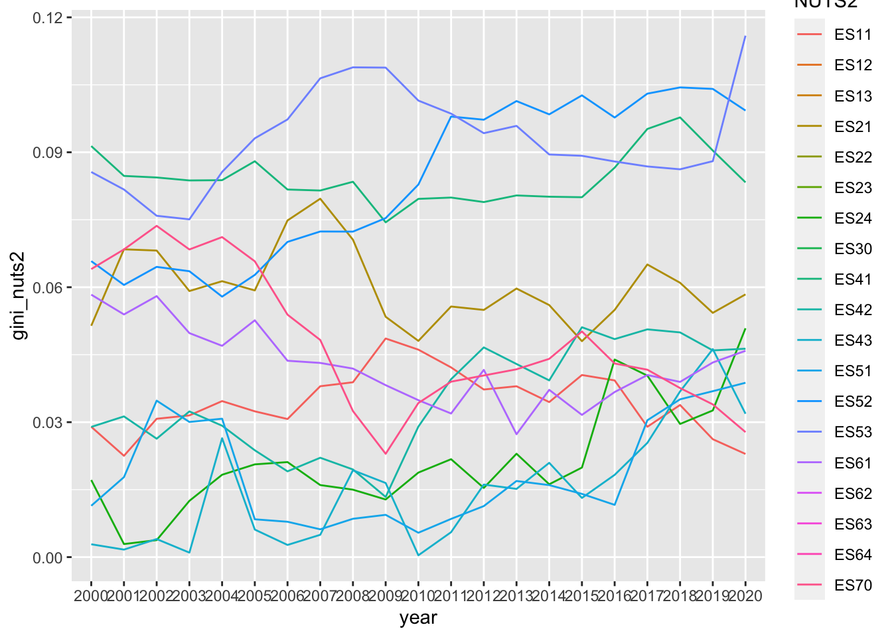
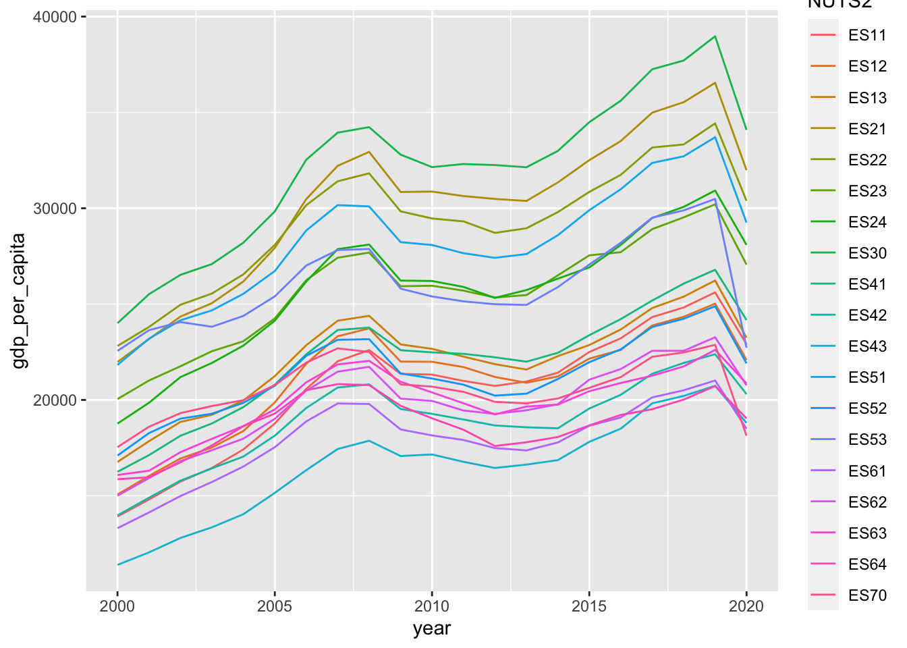
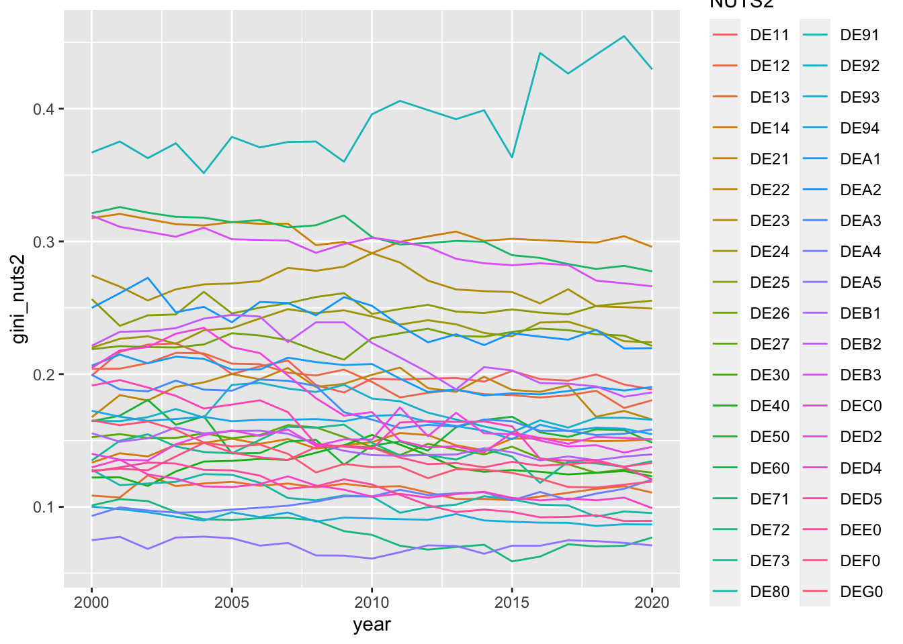
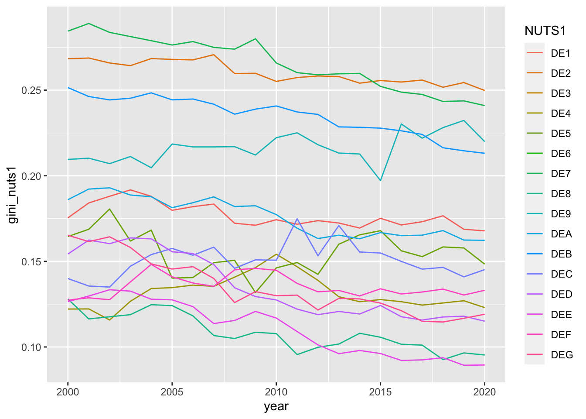
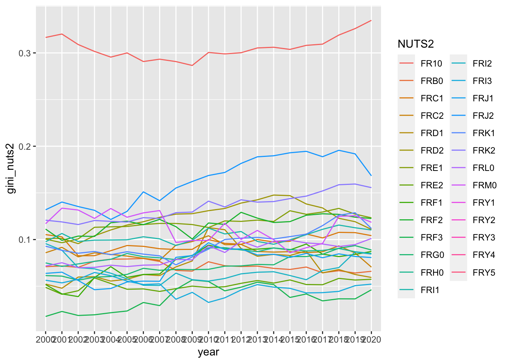
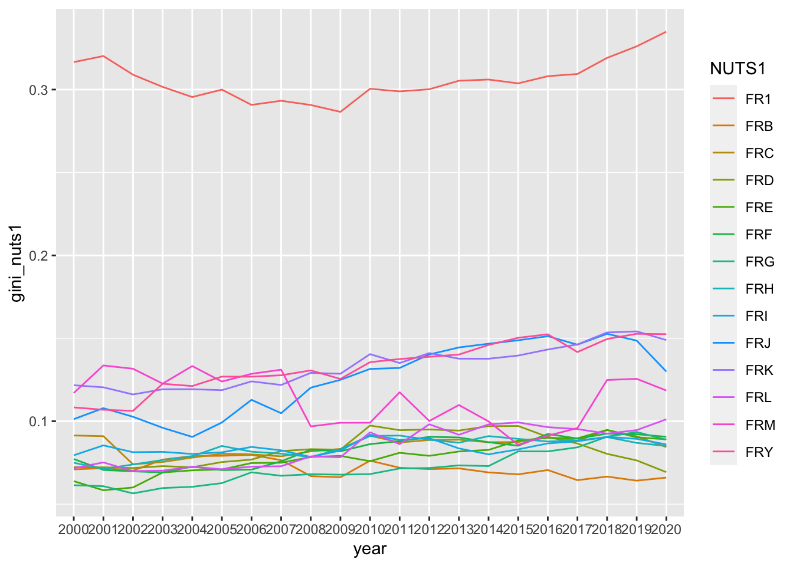
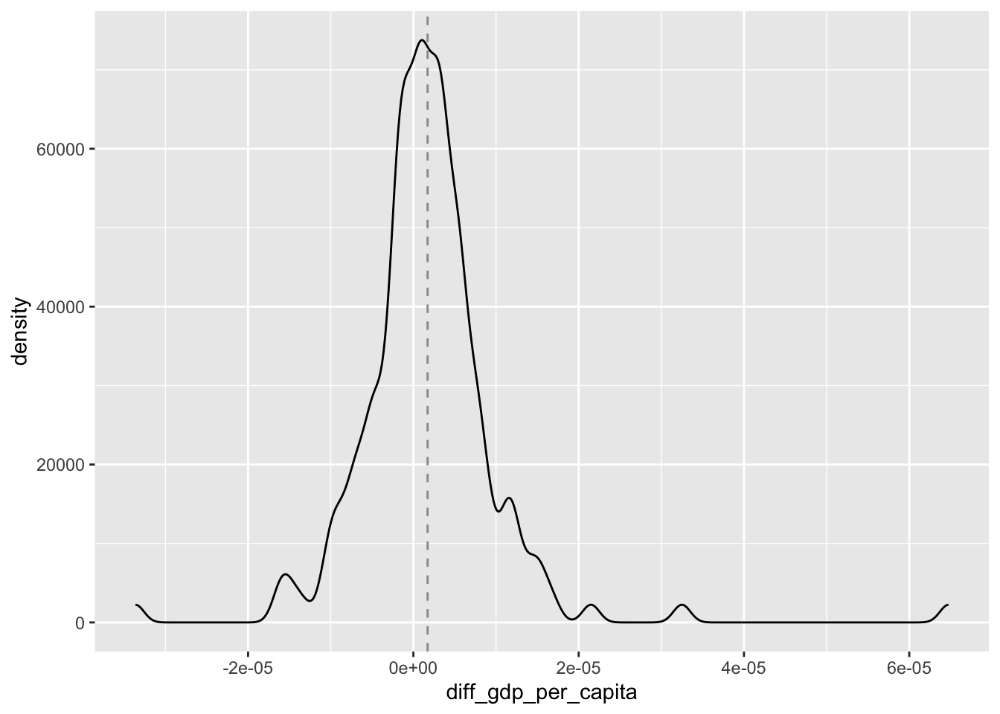

library(tidyverse)
library(readxl)
library(restatapi)
library(DescTools)
library(ggrepel)
library(flextable)
library(modelr)
library(plm)
library(broom)
library(sandwich)assignment_4
Regionale data fra Eurostat
MSB105 - Data Science
Gruppe 4: Hanna Sundal Bjerkreim & Elvar Solheim
I denne oppgaven skal vi hente ned regionale data fra Eurostat, som er EU sin statistikk organisasjon. Vi skal fokusere på landene Østerrike, Tyskland, Danmark, Frankrike, Hellas, Spania, Italia, Nederland, Belgia, Irland, Polen, Portugal, Norge, Sverige, Finland og Sveits. Vi skal hente data fra Eurostat ved hjelp av en api fra pakken restapi. Vi henter regionale GDP data og populasjonsdata for landene på NUTS3 nivå og aggregerer senere opp til NUTS2, NUTS1 og NUTSc nivå. Vi skal ordne dataene i list-columns, noe som muliggjør et “nested” datasett som inneholder data om brutto-nasjonalprodukt, befolkning, BNP per person og beregnet Gini-koeffisient. Dataene vil dekke perioden 2000-2020. Når “nested” datasett er på plass, skal vi produsere ulike plots og estimere noen enkle modeller.
toc.eurostat
Vi starter med å hente innholdsfortegnelsen fra Eurostat.
# Henter innholdsfortegnelse i tekstversjon
toc_txt <- get_eurostat_toc(mode = "txt")GDP NUTS3
Videre laster vi inn data for brutto-nasjonalprodukt (GDP) på NUTS3-nivå. Først finner vi en oversikt over Eurostat sine tabeller som både inneholder GDP og NUTS3.
gdp_tabs <- toc_txt |>
# Regex AND external to regex
filter(
str_detect(
string = title,
# For å matche både små og store bokstaver
pattern = '[Gg][Dd][Pp]'
# AND vha. &
) &
str_detect(
string = title,
# For å matche både små og store bokstaver og
# space eller ikke før 3
pattern = '[Nn][Uu][Tt][Ss]\\s*3'
)
) |>
select(title, code)gdp_tabs |>
select(title, code) |>
flextable() |>
width(1, width = 3.5) |>
width(2, width = 1.5)title | code |
|---|---|
Average annual population to calculate regional GDP data (thousand persons) by NUTS 3 regions | nama_10r_3popgdp |
Gross domestic product (GDP) at current market prices by NUTS 3 regions | nama_10r_3gdp |
European Union trade mark (EUTM) applications per billion GDP by NUTS 3 regions | ipr_ta_gdpr |
Community design (CD) applications per billion GDP by NUTS 3 regions | ipr_da_gdpr |
Vi velger å bentytte tabellen med kode nama_10r_3gdp, med følgende forklarende tekst: «Gross domestic product (GDP) at current market prices by NUTS 3 regions». Vi henter videre «Data Structure Definition» (DSD) for å få en oversikt over hva som finnes i dette datasettet.
# DSD for nama_10r_3gdp
dsd_gdp <- get_eurostat_dsd("nama_10r_3gdp")dsd_gdp |>
head(n = 15) |>
flextable() |>
width(1, width = 1) |>
width(2, width = 1) |>
width(3, width = 3.5)concept | code | name |
|---|---|---|
freq | A | Annual |
unit | MIO_EUR | Million euro |
unit | EUR_HAB | Euro per inhabitant |
unit | EUR_HAB_EU27_2020 | Euro per inhabitant in percentage of the EU27 (from 2020) average |
unit | MIO_NAC | Million units of national currency |
unit | MIO_PPS_EU27_2020 | Million purchasing power standards (PPS, EU27 from 2020) |
unit | PPS_EU27_2020_HAB | Purchasing power standard (PPS, EU27 from 2020), per inhabitant |
unit | PPS_HAB_EU27_2020 | Purchasing power standard (PPS, EU27 from 2020), per inhabitant in percentage of the EU27 (from 2020) average |
geo | EU27_2020 | European Union - 27 countries (from 2020) |
geo | BE | Belgium |
geo | BE1 | Région de Bruxelles-Capitale/Brussels Hoofdstedelijk Gewest |
geo | BE10 | Région de Bruxelles-Capitale/Brussels Hoofdstedelijk Gewest |
geo | BE100 | Arr. de Bruxelles-Capitale/Arr. Brussel-Hoofdstad |
geo | BE2 | Vlaams Gewest |
geo | BE21 | Prov. Antwerpen |
Vi velger MIO_PPS_EU27_2020 som mål på GDP. Dette gir GDP i løpende priser (million Euro).
# Gross domestic product (GDP) at current market prices by NUTS 3 regions
# id: nama_10r_3gdp
nama_10r_3gdp <- get_eurostat_data(
id = "nama_10r_3gdp",
filters = list(
geo = c("AT", "DE", "DK", "FR", "EL", "ES",
"IT", "NL", "BE", "IE", "PL", "PT", "NO", "SE", "FI", "CH"),
nuts_level = "3",
unit = "MIO_PPS_EU27_2020"
),
exact_match = FALSE,
date_filter = 2000:2020,
stringsAsFactors = FALSE
) |>
mutate(
gdp = 1000000 * values
) |>
select(-c(unit, values)) |>
# Vil bare ha NUTS 3 nivå (5 karakterer). Vil aggregere selv til NUTS2,
# NUTS1 og NUTSc
filter(str_length(geo) == 5)Populasjonsdata
Oppgave 1
Videre skal vi laste inn data for totalbefolkningen i landene på NUTS3-nivå. Vi søker etter tabeller fra Eurostat som inneholder både population og NUTS 3.
pop_tabs <- toc_txt |>
# Regex AND external to regex
filter(
str_detect(
string = title,
# For å matche både små og store bokstaver
pattern = '[Pp][Oo][Pp][Uu][Ll][Aa][Tt][Ii][Oo][Nn] '
# AND vha. &
) &
str_detect(
string = title,
# For å matche både små og store bokstaver og
# space eller ikke før 3
pattern = '[Nn][Uu][Tt][Ss]\\s*3'
)
) |>
select(title, code)pop_tabs |>
select(title, code) |>
flextable() |>
width(1, width = 3.5) |>
width(2, width = 1.5)title | code |
|---|---|
Population density by NUTS 3 region | demo_r_d3dens |
Population on 1 January by age group, sex and NUTS 3 region | demo_r_pjangrp3 |
Population on 1 January by broad age group, sex and NUTS 3 region | demo_r_pjanaggr3 |
Population structure indicators by NUTS 3 region | demo_r_pjanind3 |
Population change - Demographic balance and crude rates at regional level (NUTS 3) | demo_r_gind3 |
Population by single year of age and NUTS 3 region | cens_11ag_r3 |
Population by marital status and NUTS 3 region | cens_11ms_r3 |
Population by family status and NUTS 3 region | cens_11fs_r3 |
Population by sex, citizenship and NUTS 3 regions | cens_01rsctz |
Population by sex, age group, current activity status and NUTS 3 regions | cens_01rapop |
Total and active population by sex, age, employment status, residence one year prior to the census and NUTS 3 regions | cens_01ramigr |
Population by sex, age group, educational attainment level, current activity status and NUTS 3 regions | cens_01rews |
Population by sex, age group, household status and NUTS 3 regions | cens_01rhtype |
Population by sex, age group, size of household and NUTS 3 regions | cens_01rhsize |
Average annual population to calculate regional GDP data (thousand persons) by NUTS 3 regions | nama_10r_3popgdp |
European Union trade mark (EUTM) applications per million population by NUTS 3 regions | ipr_ta_popr |
Community design (CD) applications per million population by NUTS 3 regions | ipr_da_popr |
Population with Ukrainian citizenship by 5-year age group and NUTS3 regions | cens_21ua_a5r3 |
Population with Ukrainian citizenship by age and NUTS 3 regions | cens_21ua_ar3 |
Population with Ukrainian citizenship by 5-year age group, marital status and NUTS3 regions | cens_21ua_msr3 |
Population by broad age group and NUTS 3 regions | cens_21agr3 |
Population on 1st January by age, sex, type of projection and NUTS 3 region | proj_19rp3 |
Vi bruker tabellen med teksten: «Average annual population to calculate regional GDP data (thousand persons) by NUTS 3 regions». Denne tabellen har manglende data for noen regioner, og vi skal senere supplere med data fra tabellen med teksten «Population on 1 January by broad age group, sex and NUTS 3 region».
Oppgave 2
Tabellen med teksten «Average annual population to calculate regional GDP data (thousand persons) by NUTS 3 regions» har koden nama_10r_3popgdp. Vi laster ned Data Structure Definition (DSD) for denne tabellen.
# DSD for nama_10r_3popgdp
dsd_pop <- get_eurostat_dsd("nama_10r_3popgdp")dsd_pop |>
head(n = 15) |>
flextable() |>
width(1, width = 1) |>
width(2, width = 1) |>
width(3, width = 3.5)concept | code | name |
|---|---|---|
freq | A | Annual |
unit | THS | Thousand |
geo | EU27_2020 | European Union - 27 countries (from 2020) |
geo | BE | Belgium |
geo | BE1 | Région de Bruxelles-Capitale/Brussels Hoofdstedelijk Gewest |
geo | BE10 | Région de Bruxelles-Capitale/Brussels Hoofdstedelijk Gewest |
geo | BE100 | Arr. de Bruxelles-Capitale/Arr. Brussel-Hoofdstad |
geo | BE2 | Vlaams Gewest |
geo | BE21 | Prov. Antwerpen |
geo | BE211 | Arr. Antwerpen |
geo | BE212 | Arr. Mechelen |
geo | BE213 | Arr. Turnhout |
geo | BE22 | Prov. Limburg (BE) |
geo | BE223 | Arr. Tongeren |
geo | BE224 | Arr. Hasselt |
Ut i fra DSD formulerer vi en spørring mot Eurostat og laster ned datasettet «Average annual population to calculate regional GDP data (thousand persons) by NUTS 3 regions».
# Average annual population to calculate regional GDP data (thousand persons) by NUTS 3 regions
# id: nama_10r_3popgdp
nama_10r_3popgdp <- get_eurostat_data(
id = "nama_10r_3popgdp",
filters = list(
geo = c("AT", "DE", "DK", "FR", "EL", "ES",
"IT", "NL", "BE", "IE", "PL", "PT", "NO", "SE", "FI", "CH"),
nuts_level = "3",
unit = "THS"
),
exact_match = FALSE,
date_filter = 2000:2020,
stringsAsFactors = FALSE
) |>
mutate(pop.x = values * 1000
) |>
select(-c(unit, values)
) |>
# Vil bare ha NUTS 3 nivå (5 karakterer). Vil aggregere selv til NUTS2,
# NUTS1 og NUTSc
filter(str_length(geo) == 5)Alternative populasjonsdata
Oppgave 3
Vi skal nå hente ned befolningsdata fra tabellen med teksten «Population on 1 January by broad age group, sex and NUTS 3 region». Denne tabellen har koden demo_r_pjanaggr3.
# DSD for demo_r_pjanaggr3
dsd_pop2 <- get_eurostat_dsd("demo_r_pjanaggr3")dsd_pop2 |>
head(n = 15) |>
flextable() |>
width(1, width = 1) |>
width(2, width = 1) |>
width(3, width = 3.5)concept | code | name |
|---|---|---|
freq | A | Annual |
unit | NR | Number |
sex | T | Total |
sex | M | Males |
sex | F | Females |
age | TOTAL | Total |
age | Y_LT15 | Less than 15 years |
age | Y15-64 | From 15 to 64 years |
age | Y_GE65 | 65 years or over |
age | UNK | Unknown |
geo | EU27_2020 | European Union - 27 countries (from 2020) |
geo | EU28 | European Union - 28 countries (2013-2020) |
geo | EU27_2007 | European Union - 27 countries (2007-2013) |
geo | BE | Belgium |
geo | BE1 | Région de Bruxelles-Capitale/Brussels Hoofdstedelijk Gewest |
# Population on 1 January by broad age group, sex and NUTS 3 region
# id: demo_r_panjanaggr3
demo_r_pjanaggr3 <- get_eurostat_data(
id = "demo_r_pjanaggr3",
filters = list(
geo = c("AT", "DE", "DK", "FR", "EL", "ES",
"IT", "NL", "BE", "IE", "PL", "PT", "NO", "SE", "FI", "CH"),
nuts_level = "3",
unit = "NR",
sex = "T",
age = "TOTAL"
),
exact_match = FALSE,
date_filter = 2000:2020,
stringsAsFactors = FALSE,
) %>%
select(geo, time, pop.y = values) |>
# Vil bare ha NUTS 3 nivå (5 karakterer). Vil aggregere selv til NUTS2,
# NUTS1 og NUTSc
filter(str_length(geo) == 5)Bearbeiding av populasjonsdata
Vi tar utgangspunkt i populasjonsdata fra tabellen «Average annual population to calculate regional GDP data (thousand persons) by NUTS 3 regions» og supplerer med data fra tabellen «Population on 1 January by broad age group, sex and NUTS 3 region» der data mangler.
Oppgave 4
Vi sjekker hvilke NUTS 3 soner som inngår i tabellen “Average annual population to calculate regional GDP data (thousand persons) by NUTS 3 regions”, men ikke i tabellen “Population on 1 January by broad age group, sex and NUTS 3 region”.
setdiff(nama_10r_3popgdp$geo, demo_r_pjanaggr3$geo) [1] "DKZZZ" "ESZZZ" "ITG2D" "ITG2E" "ITG2F" "ITG2G" "ITG2H" "ITZZZ" "NLZZZ"
[10] "NO020" "NO074" "NO081" "NO082" "NO091" "NO092" "NO0A1" "NO0A2" "NO0A3"
[19] "NO0B2" "NOZZZ"Oppgave 5
Vi sjekker også hvilke NUTS 3 soner som inngår i tabellen «Population on 1 January by broad age group, sex and NUTS 3 region», men ikke i tabellen «Average annual population to calculate regional GDP data (thousand persons) by NUTS 3 regions».
setdiff(demo_r_pjanaggr3$geo, nama_10r_3popgdp$geo ) [1] "BE221" "BE222" "BE321" "BE322" "BE324" "BE325" "BE326" "BE327" "FRXXX"
[10] "ITG25" "ITG26" "ITG27" "ITG28" "ITG29" "ITG2A" "ITG2B" "ITG2C" "NO011"
[19] "NO012" "NO021" "NO022" "NO031" "NO032" "NO033" "NO034" "NO041" "NO042"
[28] "NO043" "NO051" "NO052" "NO053" "NO061" "NO062" "NO072" "NO073"Oppgave 6
Vi skal nå foreta en full join av de to populasjonstabellene, for å få ett samlet datasett med populasjonsdata.
# Slår sammen populasjonstabellene
full_pop_nuts3 <- full_join(nama_10r_3popgdp,demo_r_pjanaggr3)Joining with `by = join_by(geo, time)`Oppgave 7
Vi sjekker sonene i de nye datasettet full_pop_nuts3 mot dem vi har i GDP tabellen, nama_10_3gdp.
setdiff(full_pop_nuts3$geo, nama_10r_3gdp$geo) [1] "BE221" "BE222" "BE321" "BE322" "BE324" "BE325" "BE326" "BE327" "FRXXX"
[10] "ITG25" "ITG26" "ITG27" "ITG28" "ITG29" "ITG2A" "ITG2B" "ITG2C" "NO011"
[19] "NO012" "NO021" "NO022" "NO031" "NO032" "NO033" "NO034" "NO041" "NO042"
[28] "NO043" "NO051" "NO052" "NO053" "NO061" "NO062" "NO072" "NO073"Oppgave 8
Vi sjekker også om sonene i GDP tabellen mot dem vi har i full_pop_nuts3.
setdiff(nama_10r_3gdp$geo, full_pop_nuts3$geo)[1] "ATZZZ" "BEZZZ" "FIZZZ" "FRZZZ" "PTZZZ" "SEZZZ"Oppgave 9
**ZZZ er en slags oppsamlingskategori i gdp-dataene. Vi har ikke tilsvarende for befolkning så disse har vi ingen bruk for. Vi fjerner **ZZZ sonene fra nama_10r_3gdp.
# fjerner **ZZZ regioner
nama_10r_3gdp <- nama_10r_3gdp |>
filter(!grepl("ZZZ$", geo))Oppgave 10
Vi ønsker å benytte dataene fra «Average annual population to calculate regional GDP data (thousand persons) by NUTS 3 regions» (pop.x) der disse eksisterer og supplere med data fra «Population on 1 January by broad age group, sex and NUTS 3 region» (pop.y) der vi mangler data. Mangler vi data i begge tabellene setter vi verdien lik NA.Vi lager en ny variabel pop i full_pop_nuts3 og dropper deretter variablene pop.x og pop.y.
# Supplerer med data fra demo_r_pjanaggr3
full_pop_nuts3 <- full_pop_nuts3 |>
mutate(
pop = ifelse(
test = is.na(pop.x) == TRUE,
yes = pop.y,
no = pop.x
)
) |>
select(-pop.x, -pop.y)Oppgave 11
Videre undersøkes det om vi har noen NUTS 3 soner med pop lik 0. Disse rekodes til NA.
# Undersøker om det er NUTS3 regioner med pop = 0
if (any(full_pop_nuts3 == 0)) {
print("Verdier lik 0.")
} else {
print("Ingen verdier lik 0.")
}[1] "Verdier lik 0."# Rekoder NUTS3 regioner med pop = 0 til NA
full_pop_nuts3 <- full_pop_nuts3 |>
mutate(
pop = ifelse(
test = pop == 0,
yes = NA,
no = pop
)
)Oppgave 12
Vi har et helt sett av NUTS3 regioner som finnes i befolkningsdata, men ikke i gdp datasettet. Vi fjerner dem ved hjelp av en left_join der x er gdp-data. Da legger vi bare til befolkningsdata for de sonene hvor vi har gdp-data.
Vi utfører en left_join() der populasjonsdata blir lagt til datasettet som innholder GDP-data.
# Slår sammen GDP datasett og populasjonsdatasett
eu_data <- nama_10r_3gdp |>
left_join(full_pop_nuts3, join_by(geo, time) )dim(eu_data)[1] 21062 4Vi lager en ny variabel country fra de to første karakterene i NUTS3.
# Ny variabel "country"
eu_data <- eu_data |>
mutate(
country = str_sub(geo, start = 1L, end = 2L)
)Vi sjekker så antall NUTS3 i hvert land.
eu_data |>
distinct(geo, .keep_all = TRUE) |>
group_by(country) |>
summarise(Antall = n(), .groups = "drop")# A tibble: 16 × 2
country Antall
<chr> <int>
1 AT 35
2 BE 44
3 CH 26
4 DE 401
5 DK 11
6 EL 52
7 ES 59
8 FI 19
9 FR 101
10 IE 8
11 IT 107
12 NL 40
13 NO 12
14 PL 73
15 PT 25
16 SE 21Vi sjekker også summary for variablene i eu_data.
eu_data |>
summary() geo time gdp pop
Length:21062 Length:21062 Min. :8.512e+07 Min. : 8400
Class :character Class :character 1st Qu.:2.957e+09 1st Qu.: 132240
Mode :character Mode :character Median :5.342e+09 Median : 241050
Mean :1.004e+10 Mean : 373869
3rd Qu.:1.037e+10 3rd Qu.: 440690
Max. :2.606e+11 Max. :6757000
NA's :13
country
Length:21062
Class :character
Mode :character
Vi endrer navn og rekkefølge på variabelen i eu_data.
eu_data <- eu_data |>
select(country, NUTS3 = geo, year = time, gdp, pop)# Rydder opp
# Sletter alle objekt utenom eu_data
rm(list = setdiff(ls(), "eu_data"))Oppgave 13
Vi beregner gdp_per_capita for hver NUTS3 region for årene 2000-2020 og avrunder til 2 desimaler.
# Ny variabel "gdp_per_capita"
eu_data <- eu_data |>
mutate(gdp_per_capita = round(gdp / pop, 2))Sjekker summary gdp_per_capita.
eu_data |>
select(gdp_per_capita) |>
summary() gdp_per_capita
Min. : 3359
1st Qu.: 18324
Median : 23270
Mean : 25308
3rd Qu.: 29377
Max. :177427
NA's :13 Oppgave 14
Vi bruker case_when() for å legge til variabelen country_name. Denne variabelen inkluderer fullt navn på landene.
# Ny variabel "country_name"
eu_data <- eu_data |>
mutate(country_name = case_when(
country == "AT" ~ "Østerrike",
country == "BE" ~ "Belgia",
country == "CH" ~ "Sveits",
country == "DE" ~ "Tyskland",
country == "DK" ~ "Danmark",
country == "EL" ~ "Hellas",
country == "ES" ~ "Spania",
country == "FI" ~ "Finland",
country == "FR" ~ "Frankrike",
country == "IE" ~ "Irland",
country == "IT" ~ "Italia",
country == "NL" ~ "Nederland",
country == "NO" ~ "Norge",
country == "PL" ~ "Polen",
country == "PT" ~ "Portugal",
country == "SE" ~ "Sverige"
))Oppgave 15
Vi lager de tre variablene NUTS2, NUTS1 og NUTSc fra NUTS3. NUTSc er vår egen «oppfinnelse» og angir land (to første karakterer i NUTS kode).
# Nye variabler "NUTS2", "NUTS1" og "NUTSc"
eu_data <- eu_data |>
mutate(
NUTS2 = str_sub(NUTS3, 1, 4),
NUTS1 = str_sub(NUTS3, 1, 3),
NUTSc = str_sub(NUTS3, 1, 2)
) |>
select(
country_name, country, year, NUTS3, NUTS2, NUTS1, NUTSc, gdp, pop, gdp_per_capita
)Beregning av Gini-koeffisient
Vi benytter Gini-koeffisient for å undersøke hvor jevnt verdiskapningen er fordelt mellom regioner. Vi skal nå beregne Gini for hvert år på NUTS2, NUTS1 og NUTSc nivå. Vi vil beregne Gini utfra gdp_per_capita og pop i NUTS3 for alle aggregeringsnivåene.
Oppgave 16
Vi begynner med å beregne Gini-koeffisienten for NUTS2. Vi inkluderer også variablene “pop” og “gdp” for NUTS2. Disse vil være summen av de tilsvarende NUTS3 nivå.
# Gini-koeffisient for NUTS2
gini_NUTS2 <- eu_data |>
group_by(NUTS2, country_name, country, year) |>
summarise(
gini_nuts2 = Gini(
x = gdp_per_capita,
weights = pop,
na.rm = TRUE
),
pop = sum(pop, na.rm = TRUE),
gdp = sum(gdp, na.rm = TRUE),
gdp_per_capita = gdp / pop,
num_nuts3 = n(),
.groups = "drop"
) |>
select(country_name, country, NUTS2, year, pop, gdp,
gdp_per_capita, num_nuts3, gini_nuts2)gini_NUTS2 |>
summary() |>
print(width = 80) country_name country NUTS2 year
Length:4193 Length:4193 Length:4193 Length:4193
Class :character Class :character Class :character Class :character
Mode :character Mode :character Mode :character Mode :character
pop gdp gdp_per_capita num_nuts3
Min. : 0 Min. :8.512e+07 Min. : 3359 Min. : 1.000
1st Qu.: 714880 1st Qu.:1.628e+10 1st Qu.:19425 1st Qu.: 2.000
Median : 1451900 Median :3.416e+10 Median :24498 Median : 4.000
Mean : 1876835 Mean :5.042e+10 Mean : Inf Mean : 5.023
3rd Qu.: 2374900 3rd Qu.:6.267e+10 3rd Qu.:30870 3rd Qu.: 7.000
Max. :12363480 Max. :6.996e+11 Max. : Inf Max. :23.000
gini_nuts2
Min. :0.0001
1st Qu.:0.0591
Median :0.1014
Mean :0.1196
3rd Qu.:0.1603
Max. :0.4547
NA's :703 Vi sjekker observasjoner med Gini avrundet til 0,0000.
gini_NUTS2 |>
select(-country_name) |>
filter(gini_nuts2 < 0.001)# A tibble: 4 × 8
country NUTS2 year pop gdp gdp_per_capita num_nuts3 gini_nuts2
<chr> <chr> <chr> <dbl> <dbl> <dbl> <int> <dbl>
1 ES ES43 2010 1100400 18879360000 17157. 2 0.000405
2 IT ITF5 2006 588300 11135870000 18929. 2 0.000545
3 NO NO07 2010 467100 13738470000 29412. 2 0.000479
4 PL PL43 2020 1010100 18762060000 18574. 2 0.000148Oppgave 17
Vi beregner nå Gini-koeffisienter på NUTS1 nivå. Vi inkluderer også variablene “pop” og “gdp” for NUTS1. Disse vil være summen av de tilsvarende NUTS2 nivå.
# Gini-koeffisient for NUTS1
gini_NUTS1 <- eu_data |>
group_by(NUTS1, country_name, country, year) |>
summarise(
gini_nuts1 = Gini(
x = gdp_per_capita,
weights = pop,
na.rm = TRUE
),
pop = sum(pop, na.rm = TRUE),
gdp = sum(gdp, na.rm = TRUE),
gdp_per_capita = gdp / pop,
num_nuts3 = n(),
.groups = "drop"
) |>
select(country_name, country, NUTS1, year, pop, gdp,
gdp_per_capita, num_nuts3, gini_nuts1)gini_NUTS1 |>
summary() |>
print(width = 80) country_name country NUTS1 year
Length:1545 Length:1545 Length:1545 Length:1545
Class :character Class :character Class :character Class :character
Mode :character Mode :character Mode :character Mode :character
pop gdp gdp_per_capita num_nuts3
Min. : 25740 Min. :6.815e+08 Min. : 6423 Min. : 1.00
1st Qu.: 2544800 1st Qu.:5.422e+10 1st Qu.:19819 1st Qu.: 6.00
Median : 4032210 Median :9.979e+10 Median :24765 Median :10.00
Mean : 5093573 Mean :1.368e+11 Mean :26180 Mean :13.63
3rd Qu.: 6076380 3rd Qu.:1.649e+11 3rd Qu.:31275 3rd Qu.:16.00
Max. :17939970 Max. :6.996e+11 Max. :63383 Max. :96.00
gini_nuts1
Min. :0.01983
1st Qu.:0.08361
Median :0.12644
Mean :0.13387
3rd Qu.:0.16753
Max. :0.39082
NA's :144 Oppgave 18
Vi beregner nå Gini-koeffisienter på NUTSc nivå. Vi inkluderer også variablene “pop” og “gdp” for NUTSc. Disse vil være summen av de tilsvarende NUTS1 nivå.
# Gini-koeffisient for NUTSc
gini_NUTSc <- eu_data |>
group_by(NUTSc, country_name, country, year) |>
summarise(
gini_nutsc = Gini(
x = gdp_per_capita,
weights = pop,
na.rm = TRUE
),
pop = sum(pop, na.rm = TRUE),
gdp = sum(gdp, na.rm = TRUE),
gdp_per_capita = gdp / pop,
num_nuts3 = n(),
.groups = "drop"
) |>
select(country_name, country, NUTSc, year, pop, gdp,
gdp_per_capita, num_nuts3, gini_nutsc)gini_NUTSc |>
summary() |>
print(width = 80) country_name country NUTSc year
Length:312 Length:312 Length:312 Length:312
Class :character Class :character Class :character Class :character
Mode :character Mode :character Mode :character Mode :character
pop gdp gdp_per_capita num_nuts3
Min. : 3543470 Min. :9.547e+10 Min. : 8865 Min. : 6.00
1st Qu.: 7997358 1st Qu.:2.037e+11 1st Qu.:23421 1st Qu.: 21.00
Median :10557885 Median :3.121e+11 Median :28361 Median : 40.00
Mean :25222983 Mean :6.776e+11 Mean :28676 Mean : 67.51
3rd Qu.:43837275 3rd Qu.:1.010e+12 3rd Qu.:34222 3rd Qu.: 73.00
Max. :83161210 Max. :3.147e+12 Max. :61599 Max. :401.00
gini_nutsc
Min. :0.1110
1st Qu.:0.1430
Median :0.1691
Mean :0.1755
3rd Qu.:0.2004
Max. :0.3826 “Nestete” datastruktur
Vi vil nå «neste» de ulike gini_NUTS* datasettene og sette dem sammen til et nestet datasett “eu_dataset_nestet” som innholder alle dataene ovenfor i en fint ordnet struktur.
Oppgave 19
Vi begynner med å “neste” dataene på NUTS2 nivå.
# "Nester" NUTS2 data
gini_NUTS2_nest <- gini_NUTS2 |>
group_by(country_name, country) |>
nest(.key = "NUTS2_data") |>
ungroup()Oppgave 20
Videre “nester” vi dataene på NUTS1 nivå.
# "Nester" NUTS1 data
gini_NUTS1_nest <- gini_NUTS1 |>
group_by(country_name, country) |>
nest(.key = "NUTS1_data") |>
ungroup()Oppgave 21
Vi skal nå “neste” dataene på nasjonsnivå.
# "Nester" NUTSc data
gini_NUTSc_nest <- gini_NUTSc |>
group_by(country_name, country) |>
nest(.key = "NUTSc_data") |>
ungroup()Oppgave 22
Til slutt “nester” vi dataene på NUTS3 nivå og bruker en left_join() til legge til de “nestede” datasettene for NUTS2, NUTS1 og NUTSc.
# Gini-koeffisient for NUTS3
gini_NUTS3 <- eu_data |>
group_by(NUTS3, country_name, country, year) |>
summarise(
gini_nuts3 = Gini(
x = gdp_per_capita,
weights = pop,
na.rm = TRUE
),
pop = sum(pop, na.rm = TRUE),
gdp = sum(gdp, na.rm = TRUE),
gdp_per_capita = gdp / pop,
num_nuts3 = n(),
.groups = "drop"
) |>
select(country_name, country, NUTS3, year, pop, gdp,
gdp_per_capita, num_nuts3, gini_nuts3)# "Nester" NUTS3
gini_NUTS3_nest <- gini_NUTS3 |>
group_by(country_name, country) |>
nest(.key = "NUTS3_data") |>
ungroup()# Legger til de "nestede" datasettene for NUTS2, NUTS1 og NUTSc
eu_data_nested <- gini_NUTS3_nest |>
left_join(gini_NUTS2_nest, join_by("country_name", "country")) |>
left_join(gini_NUTS1_nest, join_by("country_name", "country")) |>
left_join(gini_NUTSc_nest, join_by("country_name", "country"))# Rydder opp
rm(list = setdiff(ls(), c("eu_data", "eu_data_nested")))eu_data_nested# A tibble: 16 × 6
country_name country NUTS3_data NUTS2_data NUTS1_data NUTSc_data
<chr> <chr> <list> <list> <list> <list>
1 Østerrike AT <tibble [735 × 7]> <tibble> <tibble> <tibble>
2 Belgia BE <tibble [712 × 7]> <tibble> <tibble> <tibble>
3 Sveits CH <tibble [208 × 7]> <tibble> <tibble> <tibble>
4 Tyskland DE <tibble [8,421 × 7]> <tibble> <tibble> <tibble>
5 Danmark DK <tibble [231 × 7]> <tibble> <tibble> <tibble>
6 Hellas EL <tibble [1,092 × 7]> <tibble> <tibble> <tibble>
7 Spania ES <tibble [1,239 × 7]> <tibble> <tibble> <tibble>
8 Finland FI <tibble [399 × 7]> <tibble> <tibble> <tibble>
9 Frankrike FR <tibble [2,121 × 7]> <tibble> <tibble> <tibble>
10 Irland IE <tibble [162 × 7]> <tibble> <tibble> <tibble>
11 Italia IT <tibble [2,247 × 7]> <tibble> <tibble> <tibble>
12 Nederland NL <tibble [840 × 7]> <tibble> <tibble> <tibble>
13 Norge NO <tibble [156 × 7]> <tibble> <tibble> <tibble>
14 Polen PL <tibble [1,533 × 7]> <tibble> <tibble> <tibble>
15 Portugal PT <tibble [525 × 7]> <tibble> <tibble> <tibble>
16 Sverige SE <tibble [441 × 7]> <tibble> <tibble> <tibble> Plots som viser utviklingen
Oppgave 23
Vi skal nå generere ett plott som viser utviklingen i Gini-koeffisient på nasjonsnivå for de 16 landene.
eu_data_nested |>
unnest(NUTSc_data) |>
select(year, gini_nutsc, country_name) |>
ggplot(aes(x = year, y = gini_nutsc, group = country_name, color = country_name)) +
geom_line()
Tabellen under viser Gini i år 2020 for alle landene.
eu_data_nested |>
unnest(NUTSc_data) |>
filter(year == 2020) |>
select(country_name, gini_nutsc) |>
arrange(desc(gini_nutsc)) |>
flextable() |>
width(1, width = 1.5) |>
width(2, width = 1.5)country_name | gini_nutsc |
|---|---|
Irland | 0.3826165 |
Polen | 0.2378284 |
Frankrike | 0.2064403 |
Hellas | 0.2036007 |
Tyskland | 0.2020493 |
Belgia | 0.1959298 |
Italia | 0.1845053 |
Danmark | 0.1654528 |
Nederland | 0.1573150 |
Norge | 0.1510297 |
Spania | 0.1400519 |
Sverige | 0.1323442 |
Portugal | 0.1230546 |
Østerrike | 0.1224705 |
Finland | 0.1212452 |
Oppgave 24
Ut i fra plottet ser vi at Gini-koeffisienten for Irland skyter til værs fra omlag år 2010. Irland er også det landet med høyest Gini-verdi. Vi skal nå se nærmere på utvikling i gini-koeffisient og gdp_per_capita for de ulike NUTS2 sonene i Irland.
I tabellen under ser vi en oversikt over utviklingen i Gini-koeffisient for NUTS2 sonene i Irland.
eu_data_nested |>
filter(country_name == "Irland") |>
unnest(NUTS2_data) |>
select(NUTS2, year, gini_nuts2) |>
flextable() |>
width(1, width = 1.5) |>
width(2, width = 1.5)NUTS2 | year | gini_nuts2 |
|---|---|---|
IE04 | 2000 | 0.12312561 |
IE04 | 2001 | 0.12956190 |
IE04 | 2002 | 0.06318599 |
IE04 | 2003 | 0.03032886 |
IE04 | 2004 | 0.08109587 |
IE04 | 2005 | 0.07961662 |
IE04 | 2006 | 0.06434471 |
IE04 | 2007 | 0.07999625 |
IE04 | 2008 | 0.09187490 |
IE04 | 2009 | 0.12750682 |
IE04 | 2010 | 0.16571218 |
IE04 | 2011 | 0.17174129 |
IE04 | 2012 | 0.19386944 |
IE04 | 2013 | 0.17280122 |
IE04 | 2014 | 0.21387000 |
IE04 | 2015 | 0.20607425 |
IE04 | 2016 | 0.20662891 |
IE04 | 2017 | 0.15140781 |
IE04 | 2018 | 0.16895623 |
IE04 | 2019 | 0.17456392 |
IE04 | 2020 | 0.32178852 |
IE05 | 2000 | 0.14272675 |
IE05 | 2001 | 0.17157286 |
IE05 | 2002 | 0.23133080 |
IE05 | 2003 | 0.15978361 |
IE05 | 2004 | 0.14181869 |
IE05 | 2005 | 0.15701296 |
IE05 | 2006 | 0.15216101 |
IE05 | 2007 | 0.15286466 |
IE05 | 2008 | 0.13684589 |
IE05 | 2009 | 0.19583205 |
IE05 | 2010 | 0.19852713 |
IE05 | 2011 | 0.24429044 |
IE05 | 2012 | 0.24476866 |
IE05 | 2013 | 0.16406741 |
IE05 | 2014 | 0.21325659 |
IE05 | 2015 | |
IE05 | 2016 | |
IE05 | 2017 | |
IE05 | 2018 | 0.33340668 |
IE05 | 2019 | 0.27480470 |
IE05 | 2020 | 0.38215439 |
IE06 | 2000 | 0.24578629 |
IE06 | 2001 | 0.27125525 |
IE06 | 2002 | 0.21019030 |
IE06 | 2003 | 0.22778539 |
IE06 | 2004 | 0.22757404 |
IE06 | 2005 | 0.25673014 |
IE06 | 2006 | 0.22348125 |
IE06 | 2007 | 0.23501259 |
IE06 | 2008 | 0.26258757 |
IE06 | 2009 | 0.26782869 |
IE06 | 2010 | 0.32317347 |
IE06 | 2011 | 0.34423906 |
IE06 | 2012 | 0.35534175 |
IE06 | 2013 | 0.38360258 |
IE06 | 2014 | 0.39008370 |
IE06 | 2015 | 0.33548581 |
IE06 | 2016 | 0.35346251 |
IE06 | 2017 | 0.36839547 |
IE06 | 2018 | 0.37901152 |
IE06 | 2019 | 0.39684316 |
IE06 | 2020 | 0.43423978 |
I tabellen under ser vi en oversikt over utviklingen i gdp_per_capita for de ulike NUTS2 sonene i Irland.
eu_data_nested |>
filter(country_name == "Irland") |>
unnest(NUTS2_data) |>
select(NUTS2, year, gdp_per_capita) |>
flextable() |>
width(1, width = 1.5) |>
width(2, width = 1.5)NUTS2 | year | gdp_per_capita |
|---|---|---|
IE04 | 2000 | 16,692.46 |
IE04 | 2001 | 17,661.33 |
IE04 | 2002 | 19,128.84 |
IE04 | 2003 | 19,637.24 |
IE04 | 2004 | 21,620.15 |
IE04 | 2005 | 22,089.61 |
IE04 | 2006 | 24,331.68 |
IE04 | 2007 | 24,585.47 |
IE04 | 2008 | 22,675.35 |
IE04 | 2009 | 20,296.05 |
IE04 | 2010 | 21,949.62 |
IE04 | 2011 | 24,164.51 |
IE04 | 2012 | 24,150.40 |
IE04 | 2013 | 21,574.19 |
IE04 | 2014 | 22,524.99 |
IE04 | 2015 | 24,124.46 |
IE04 | 2016 | 22,942.09 |
IE04 | 2017 | 25,035.40 |
IE04 | 2018 | 25,146.39 |
IE04 | 2019 | 25,184.98 |
IE04 | 2020 | 23,696.39 |
IE05 | 2000 | 23,835.52 |
IE05 | 2001 | 26,998.52 |
IE05 | 2002 | 29,920.73 |
IE05 | 2003 | 30,664.21 |
IE05 | 2004 | 30,657.57 |
IE05 | 2005 | 31,326.17 |
IE05 | 2006 | 33,455.42 |
IE05 | 2007 | 35,714.88 |
IE05 | 2008 | 32,355.49 |
IE05 | 2009 | 29,667.47 |
IE05 | 2010 | 30,680.67 |
IE05 | 2011 | 32,826.67 |
IE05 | 2012 | 33,372.58 |
IE05 | 2013 | 32,815.19 |
IE05 | 2014 | 33,924.39 |
IE05 | 2015 | 30,172.28 |
IE05 | 2016 | 29,699.72 |
IE05 | 2017 | 29,789.05 |
IE05 | 2018 | 71,209.31 |
IE05 | 2019 | 74,539.22 |
IE05 | 2020 | 76,983.92 |
IE06 | 2000 | 29,192.95 |
IE06 | 2001 | 30,485.86 |
IE06 | 2002 | 31,805.13 |
IE06 | 2003 | 33,002.40 |
IE06 | 2004 | 36,195.35 |
IE06 | 2005 | 38,579.77 |
IE06 | 2006 | 40,448.89 |
IE06 | 2007 | 42,350.73 |
IE06 | 2008 | 39,852.99 |
IE06 | 2009 | 36,569.62 |
IE06 | 2010 | 38,186.56 |
IE06 | 2011 | 37,708.15 |
IE06 | 2012 | 38,688.55 |
IE06 | 2013 | 40,634.37 |
IE06 | 2014 | 43,838.62 |
IE06 | 2015 | 49,405.75 |
IE06 | 2016 | 53,774.71 |
IE06 | 2017 | 57,092.90 |
IE06 | 2018 | 59,937.07 |
IE06 | 2019 | 61,274.46 |
IE06 | 2020 | 64,839.24 |
Ut i fra tabellene ser vi en sammenheng mellom utviklingen i Gini-koeffisienten og GDP per capita i Irland. For IE04 øker Gini-koeffisienten fra 2000 til 2020, noe som indikerer økt ulikhet i verdiskapningen. Samtidig ser vi en jevn økning i GDP per capita fra 2000 til 2018, men en nedgang i 2019 og 2020. For IE05 varierer Gini-koeffisienten gjennom årene, men det er en tydelig økning fra 2018 til 2020. GDP per capita har hatt en jevn økning over hele perioden, med en betydelig økning fra 2018 til 2020. For IE06 har Gini-koeffisienten variert, men hatt en markant økning fra 2016 til 2020. GDP per capita har hatt en jevn økning fra 2000 til 2020.
Det ser ut til å være en tendens til økende ulikhet i alle regionene mot slutten av perioden, spesielt fra 2018 til 2020. For IE04 og IE06 ser vi at økning i Gini-koeffisienten korrelerer med økning i GDP oer capita. For IE05 er sammenhengen mer kompleks, da Gini-koeffisienten og GDP per capita varierer uavhenging i visse år. Kort forklart er årsaken til Irlands spesielle kurver at Apple Inc. restrukturerte sitt skatteopplegg.
Hvordan er verdiskapningen fordelt mellom regionene i ulike land?
Spania
Oppgave 25
- Lager et line-plot som viser utviklingen i Gini-koeffisientene for NUTS2 regionene i Spania
eu_data_nested |>
filter(country_name == "Spania") |>
unnest(NUTS2_data) |>
select(NUTS2, year,gini_nuts2) |>
ggplot(aes(x = year, y = gini_nuts2, group = NUTS2, color = NUTS2)) +
geom_line()Warning: Removed 168 rows containing missing values (`geom_line()`).
Oppgave 26
- Gjør tilsvarende for NUTS1 regionene i Spania
eu_data_nested |>
filter(country_name == "Spania") |>
unnest(NUTS1_data) |>
select(NUTS1, year,gini_nuts1) |>
ggplot(aes(x = year, y = gini_nuts1, group = NUTS1, color = NUTS1)) +
geom_line()Warning: Removed 21 rows containing missing values (`geom_line()`).
Oppgave 27
Gini-koeffisientene i 2020 spenner fra ca. 0.01 til over 0.1. Det ser altså ut til å være noen forskjeller mellom NUTS2 regionene i Spania, de fleste ligger i spennet fra ca. 0,02 til ca. 0,05 noe som tilsier en relativit lik økonomisk aktivitet og moderat til middels ulikhet. De gjennstående tre regionene spenner fra 0,08 til nesten 0,12 og disse er derfor noe mer ulike enn de andre noe som kan tyde på mindre økonomisk aktivitet og en mye større ulikhet.
Ser vi på NUTS1 regionene har vi to med lav ulikhet, to med middels ulikhet og to med ekstrem ulikhet. Dette kan forklare noe av grunnen til at så mange NUTS3 lå samlet, nemlig fordi spriket i NUTS1 er ganske gjennomsnittelig på middels forskjeller og man ser videre at forskjellene er både ganske små og store innenfor visse NUTS1 regioner.
Oppgave 28
- Lag et line-plot (plottet vist i Figur 3) som viser utviklingen i gdp_per_capita (nominelle verdier) for de ulike NUTS2 regionene i Spania. Hva er det vi ser effekten av til høyre i Figur 3?
eu_data_nested |>
filter(country_name == "Spania") |>
unnest(NUTS2_data) |>
select(NUTS2, year,gdp_per_capita) |>
ggplot(aes(x = year, y = gdp_per_capita, group = NUTS2, color = NUTS2)) +
geom_line()
Det vi ser effekten av er at gdp per capita synker for alle regioner når covid19 ankom.
Tyskland
Oppgave 29
- Et line-plot som viser utviklingen i Gini-koeffisient for NUTS2 regionene i Tyskland:
eu_data_nested |>
filter(country_name == "Tyskland") |>
unnest(NUTS2_data) |>
select(NUTS2, year,gini_nuts2) |>
ggplot(aes(x = year, y = gini_nuts2, group = NUTS2, color = NUTS2)) +
geom_line()Warning: Removed 42 rows containing missing values (`geom_line()`).
Oppgave 30
Line-plot som viser utviklingen i Gini-koeffisient for NUTS1 regionene i Tyskland:
eu_data_nested |>
filter(country_name == "Tyskland") |>
unnest(NUTS1_data) |>
select(NUTS1, year,gini_nuts1) |>
ggplot(aes(x = year, y = gini_nuts1, group = NUTS1, color = NUTS1)) +
geom_line()Warning: Removed 42 rows containing missing values (`geom_line()`).
Vi finner samme trend i NUTS1 regionene.
Frankrike
Oppgave 31
- Utviklingen i Gini-koeffisient for NUTS2 regionene i Frankrike i et line-plot:
eu_data_nested |>
filter(country_name == "Frankrike") |>
unnest(NUTS2_data) |>
select(NUTS2, year,gini_nuts2) |>
ggplot(aes(x = year, y = gini_nuts2, group = NUTS2, color = NUTS2)) +
geom_line()Warning: Removed 105 rows containing missing values (`geom_line()`).
Oppgave 32
- Utviklingen i Gini-koeffisient for NUTS1 regionene i Frankrike i et line-plot:
eu_data_nested |>
filter(country_name == "Frankrike") |>
unnest(NUTS1_data) |>
select(NUTS1, year,gini_nuts1) |>
ggplot(aes(x = year, y = gini_nuts1, group = NUTS1, color = NUTS1)) +
geom_line()
Oppgave 33
Vi ser at det store inntektsforskjeller i gdp i denne regionen, som kan være en idikator på at det er store forskjeller mellom de som har mest og de som har minst, som igjen resulterer i en høyere gini-faktor. Vi ser også at dette er Paris–regionen, og man kan dermed tenke seg at hypotesen ovenfor stemmer i og med at det nok finnes svært velstående og langt mindre velstående områder her. Vi skal undersøke dette nærmere nedenfor:
Oppgave 34
eu_data |>
filter(country_name == "Frankrike" & NUTS1 == "FR1") |>
select(NUTS3, year, gdp_per_capita) |>
arrange(NUTS3, year) |>
flextable() |>
width(1, width = 1.5) |>
width(2, width = 1.5)NUTS3 | year | gdp_per_capita |
|---|---|---|
FR101 | 2000 | 64,711.33 |
FR101 | 2001 | 67,959.57 |
FR101 | 2002 | 68,409.07 |
FR101 | 2003 | 66,383.41 |
FR101 | 2004 | 66,717.22 |
FR101 | 2005 | 70,632.26 |
FR101 | 2006 | 71,119.75 |
FR101 | 2007 | 75,298.60 |
FR101 | 2008 | 74,872.69 |
FR101 | 2009 | 71,147.89 |
FR101 | 2010 | 77,445.13 |
FR101 | 2011 | 78,650.71 |
FR101 | 2012 | 80,113.32 |
FR101 | 2013 | 82,883.77 |
FR101 | 2014 | 84,199.17 |
FR101 | 2015 | 86,616.83 |
FR101 | 2016 | 89,288.42 |
FR101 | 2017 | 92,711.33 |
FR101 | 2018 | 97,608.98 |
FR101 | 2019 | 104,924.34 |
FR101 | 2020 | 96,832.10 |
FR102 | 2000 | 18,234.30 |
FR102 | 2001 | 18,383.98 |
FR102 | 2002 | 19,849.50 |
FR102 | 2003 | 19,771.76 |
FR102 | 2004 | 20,375.17 |
FR102 | 2005 | 21,072.37 |
FR102 | 2006 | 22,042.36 |
FR102 | 2007 | 23,072.22 |
FR102 | 2008 | 24,052.58 |
FR102 | 2009 | 23,450.88 |
FR102 | 2010 | 23,241.38 |
FR102 | 2011 | 24,739.38 |
FR102 | 2012 | 25,163.23 |
FR102 | 2013 | 24,974.51 |
FR102 | 2014 | 25,148.82 |
FR102 | 2015 | 25,440.98 |
FR102 | 2016 | 25,774.97 |
FR102 | 2017 | 26,212.26 |
FR102 | 2018 | 26,447.38 |
FR102 | 2019 | 28,458.36 |
FR102 | 2020 | 25,253.07 |
FR103 | 2000 | 26,053.11 |
FR103 | 2001 | 27,265.99 |
FR103 | 2002 | 27,917.60 |
FR103 | 2003 | 27,383.44 |
FR103 | 2004 | 27,542.31 |
FR103 | 2005 | 29,238.05 |
FR103 | 2006 | 29,873.91 |
FR103 | 2007 | 31,622.30 |
FR103 | 2008 | 33,001.76 |
FR103 | 2009 | 31,175.22 |
FR103 | 2010 | 32,595.35 |
FR103 | 2011 | 33,602.09 |
FR103 | 2012 | 33,238.97 |
FR103 | 2013 | 34,442.85 |
FR103 | 2014 | 33,930.65 |
FR103 | 2015 | 35,265.27 |
FR103 | 2016 | 35,769.17 |
FR103 | 2017 | 36,226.33 |
FR103 | 2018 | 36,910.82 |
FR103 | 2019 | 38,718.16 |
FR103 | 2020 | 35,764.50 |
FR104 | 2000 | 23,505.97 |
FR104 | 2001 | 25,080.70 |
FR104 | 2002 | 26,238.29 |
FR104 | 2003 | 26,497.41 |
FR104 | 2004 | 26,767.19 |
FR104 | 2005 | 26,974.71 |
FR104 | 2006 | 28,329.77 |
FR104 | 2007 | 29,925.14 |
FR104 | 2008 | 31,904.51 |
FR104 | 2009 | 30,391.92 |
FR104 | 2010 | 31,579.49 |
FR104 | 2011 | 30,627.77 |
FR104 | 2012 | 30,773.91 |
FR104 | 2013 | 33,418.20 |
FR104 | 2014 | 33,456.83 |
FR104 | 2015 | 34,066.68 |
FR104 | 2016 | 34,442.80 |
FR104 | 2017 | 35,674.12 |
FR104 | 2018 | 36,828.32 |
FR104 | 2019 | 38,981.61 |
FR104 | 2020 | 37,715.82 |
FR105 | 2000 | 59,215.16 |
FR105 | 2001 | 61,801.35 |
FR105 | 2002 | 64,608.62 |
FR105 | 2003 | 63,029.64 |
FR105 | 2004 | 64,401.21 |
FR105 | 2005 | 69,520.20 |
FR105 | 2006 | 70,968.09 |
FR105 | 2007 | 75,660.52 |
FR105 | 2008 | 78,390.85 |
FR105 | 2009 | 75,135.04 |
FR105 | 2010 | 81,504.56 |
FR105 | 2011 | 82,513.52 |
FR105 | 2012 | 83,458.31 |
FR105 | 2013 | 87,055.95 |
FR105 | 2014 | 87,571.29 |
FR105 | 2015 | 88,589.36 |
FR105 | 2016 | 91,034.48 |
FR105 | 2017 | 92,925.87 |
FR105 | 2018 | 97,472.78 |
FR105 | 2019 | 106,004.00 |
FR105 | 2020 | 99,390.35 |
FR106 | 2000 | 21,797.18 |
FR106 | 2001 | 22,640.51 |
FR106 | 2002 | 23,763.08 |
FR106 | 2003 | 23,490.82 |
FR106 | 2004 | 24,229.39 |
FR106 | 2005 | 25,753.06 |
FR106 | 2006 | 26,926.69 |
FR106 | 2007 | 28,303.06 |
FR106 | 2008 | 28,764.16 |
FR106 | 2009 | 27,669.69 |
FR106 | 2010 | 29,978.03 |
FR106 | 2011 | 29,704.06 |
FR106 | 2012 | 29,621.48 |
FR106 | 2013 | 30,573.68 |
FR106 | 2014 | 33,315.13 |
FR106 | 2015 | 34,500.65 |
FR106 | 2016 | 34,588.08 |
FR106 | 2017 | 35,228.29 |
FR106 | 2018 | 36,137.40 |
FR106 | 2019 | 37,518.76 |
FR106 | 2020 | 32,554.17 |
FR107 | 2000 | 21,735.83 |
FR107 | 2001 | 22,663.97 |
FR107 | 2002 | 23,662.41 |
FR107 | 2003 | 24,120.79 |
FR107 | 2004 | 24,626.91 |
FR107 | 2005 | 25,584.52 |
FR107 | 2006 | 27,339.84 |
FR107 | 2007 | 28,946.21 |
FR107 | 2008 | 28,950.11 |
FR107 | 2009 | 29,473.03 |
FR107 | 2010 | 31,004.93 |
FR107 | 2011 | 31,102.83 |
FR107 | 2012 | 30,824.80 |
FR107 | 2013 | 31,937.45 |
FR107 | 2014 | 32,245.09 |
FR107 | 2015 | 34,015.60 |
FR107 | 2016 | 34,558.29 |
FR107 | 2017 | 35,019.33 |
FR107 | 2018 | 35,320.95 |
FR107 | 2019 | 36,936.85 |
FR107 | 2020 | 34,102.55 |
FR108 | 2000 | 19,882.64 |
FR108 | 2001 | 20,756.18 |
FR108 | 2002 | 21,891.88 |
FR108 | 2003 | 21,731.36 |
FR108 | 2004 | 22,755.78 |
FR108 | 2005 | 24,123.01 |
FR108 | 2006 | 24,739.98 |
FR108 | 2007 | 26,175.87 |
FR108 | 2008 | 27,063.20 |
FR108 | 2009 | 25,734.03 |
FR108 | 2010 | 26,154.10 |
FR108 | 2011 | 26,847.58 |
FR108 | 2012 | 27,381.03 |
FR108 | 2013 | 27,634.94 |
FR108 | 2014 | 25,615.16 |
FR108 | 2015 | 25,951.61 |
FR108 | 2016 | 26,240.62 |
FR108 | 2017 | 27,159.16 |
FR108 | 2018 | 27,352.50 |
FR108 | 2019 | 28,649.54 |
FR108 | 2020 | 26,734.90 |
Oppgave 35
Det ser ut til at det er betydelige forskjeller i GDP per capita mellom ulike NUTS3-regioner i FR1. Regioner som FR105 og FR101 har høyere GDP per capita sammenlignet med andre regioner som FR102 og FR108. Dette skaper større ulikheter og forklarer den høye gini-faktoren.
Enkle modeller
“Data Science” modeller
Oppgave 36
NUTS2_diff <- eu_data_nested |>
unnest(NUTS2_data) |>
mutate(
# Når vi tar diff får vi en obs. mindre. Legger derfor inn en NA først
# i vektoren
diff_gdp_per_capita = c(NA, diff(gdp_per_capita)),
diff_gini_nuts2 = c(NA, diff(gini_nuts2))
) |>
select(country_name, country, NUTS2, year, diff_gdp_per_capita, diff_gini_nuts2) %>%
# Fjerner obs. der vi har NA
filter(complete.cases(.)) |>
group_by(country_name, country, NUTS2) |>
nest(.key = "NUTS2_diff")Oppgave 37
# Definerer en funksjon som passer en lineær modell
fit_model <- function(data) {
lm(diff_gini_nuts2 ~ diff_gdp_per_capita, data = data)
}
# Bruker map til å bruke funksjonen på hvert NUTS2_diff-element
NUTS2_diff <- NUTS2_diff %>%
mutate(modell = map(NUTS2_diff, fit_model))Oppgave 38
NUTS2_diff <- NUTS2_diff |>
group_by(country_name, country, NUTS2) |>
mutate(
mod_coeff = map_df(
.x = modell,
.f = coef
)
)Oppgave 39
NUTS2_diff <- NUTS2_diff |>
group_by(country_name, country, NUTS2) |>
mutate(
mod_sum = map_df(
.x = modell,
.f = glance
)
)Oppgave 40
NUTS2_diff$mod_coeff |>
ggplot() +
geom_density(mapping = aes(x = diff_gdp_per_capita), adjust = 0.6) +
geom_vline(mapping = aes(xintercept = mean(diff_gdp_per_capita, na.rm = TRUE)),
colour = "gray60",
linetype = "dashed")
Oppgave 41
# Teller antall positive regresjonskoeffisienter
positive_coefficients <- sum(NUTS2_diff$mod_coeff$`diff_gdp_per_capita` > 0, na.rm = TRUE)
# Skriver ut resultatet
cat("Antall positive regresjonskoeffisienter for diff_gdp_per_capita er:", positive_coefficients, "\n")Antall positive regresjonskoeffisienter for diff_gdp_per_capita er: 105 Oppgave 42
# Beregner gjennomsnittet av koeffisientene for diff_gdp_per_capita
mean_coefficient <- mean(NUTS2_diff$mod_coeff$`diff_gdp_per_capita`, na.rm = TRUE)
# Skriver ut resultatet
cat("Gjennomsnittet av koeffisientene for diff_gdp_per_capita er:", mean_coefficient, "\n")Gjennomsnittet av koeffisientene for diff_gdp_per_capita er: 1.720057e-06 Oppgave 43
# Utfør t-test
t_test_result <- t.test(NUTS2_diff$mod_coeff$`diff_gdp_per_capita`, alternative = "greater")
# Skriv ut resultatet
cat("T-test for diff_gdp_per_capita:\n")T-test for diff_gdp_per_capita:cat("Teststatistikk:", t_test_result$statistic, "\n")Teststatistikk: 2.622602 cat("P-verdi:", t_test_result$p.value, "\n")P-verdi: 0.004754696 Panel modell
Oppgave 44 og 45
NUTS2_diff_pdata <- NUTS2_diff |>
unnest(NUTS2_diff) %>%
# dropper list-columns
# Bruker %>% for å kunne benytte . for data
select(-modell, -mod_coeff, -mod_sum)# Utfør panelregresjon
p_mod <- plm(diff_gini_nuts2 ~ diff_gdp_per_capita, data = NUTS2_diff_pdata, index = c("NUTS2", "year"), model = "within")
# Skriv ut resultatene av regresjonen
summary(p_mod)Oneway (individual) effect Within Model
Call:
plm(formula = diff_gini_nuts2 ~ diff_gdp_per_capita, data = NUTS2_diff_pdata,
model = "within", index = c("NUTS2", "year"))
Unbalanced Panel: n = 173, T = 7-21, N = 3465
Residuals:
Min. 1st Qu. Median 3rd Qu. Max.
-0.26428158 -0.00640460 -0.00076946 0.00495061 0.28513472
Coefficients:
Estimate Std. Error t-value Pr(>|t|)
diff_gdp_per_capita 3.0221e-06 1.3226e-07 22.849 < 2.2e-16 ***
---
Signif. codes: 0 '***' 0.001 '**' 0.01 '*' 0.05 '.' 0.1 ' ' 1
Total Sum of Squares: 1.9594
Residual Sum of Squares: 1.6911
R-Squared: 0.13692
Adj. R-Squared: 0.091551
F-statistic: 522.094 on 1 and 3291 DF, p-value: < 2.22e-16Tolkning av resultatene:
Residuals (Feil):
- Min. til Max.: Dette viser spredningen av de beregnede feiltermene (residuals) i modellen. Minimumsverdien er -0.2643, og maksimumsverdien er 0.2851.
Coefficients (Koeffisienter):
Estimate (Estimat): 3.0221e-06 er estimert endring i Gini-koeffisienten for hver enhet endring i GDP per capita. Med andre ord, en liten positiv endring i GDP per capita er forbundet med en liten positiv endring i Gini-koeffisienten.
Std. Error (Standardfeil): 1.3226e-07 er standardfeilen knyttet til estimatet. Dette gir en indikasjon på usikkerheten rundt estimatet.
t-value: 22.849 er t-verdien, som er et mål på hvor langt estimatet er fra null, relativt til standardfeilen. Jo høyere t-verdien er, jo mer signifikant er koeffisienten.
Pr(>|t|): < 2.2e-16 er p-verdien, som indikerer signifikansnivået. I dette tilfellet er p-verdien svært lav, noe som tyder på at koeffisienten er svært signifikant.
Model Fit (Modelltilpasning):
Total Sum of Squares: 1.9594 er den totale variansen i Gini-koeffisienten.
Residual Sum of Squares: 1.6911 er den gjenværende variansen som ikke forklares av modellen.
R-Squared: 0.13692 er R-kvadrat, som er et mål på hvor mye variasjon i Gini-koeffisienten modellen forklarer. Her forklarer modellen omtrent 13.7% av variansen.
Adj. R-Squared: 0.091551 er justert R-kvadrat, som tar hensyn til antall prediktorer i modellen. Det justerte R-kvadratet er lavere enn R-kvadratet og tar hensyn til over-tilpasning.
F-statistic: 522.094 er F-statistikken, som tester nullhypotesen om at alle koeffisientene i modellen er lik null. En høy F-verdi indikerer at modellen er signifikant.
P-value for F-statistic: < 2.22e-16 er p-verdien for F-statistikken, og den er svært lav. Dette indikerer at modellen som helhet er signifikant.
Samlet sett tyder resultatene på at det er en signifikant sammenheng mellom endringer i GDP per capita og endringer i Gini-koeffisienten, og at modellen er statistisk signifikant.
Oppgave 46
summary(p_mod, vcov = function(x) vcovHC(x, method = "white2"))Oneway (individual) effect Within Model
Note: Coefficient variance-covariance matrix supplied: function(x) vcovHC(x, method = "white2")
Call:
plm(formula = diff_gini_nuts2 ~ diff_gdp_per_capita, data = NUTS2_diff_pdata,
model = "within", index = c("NUTS2", "year"))
Unbalanced Panel: n = 173, T = 7-21, N = 3465
Residuals:
Min. 1st Qu. Median 3rd Qu. Max.
-0.26428158 -0.00640460 -0.00076946 0.00495061 0.28513472
Coefficients:
Estimate Std. Error t-value Pr(>|t|)
diff_gdp_per_capita 3.0221e-06 1.6303e-07 18.538 < 2.2e-16 ***
---
Signif. codes: 0 '***' 0.001 '**' 0.01 '*' 0.05 '.' 0.1 ' ' 1
Total Sum of Squares: 1.9594
Residual Sum of Squares: 1.6911
R-Squared: 0.13692
Adj. R-Squared: 0.091551
F-statistic: 343.639 on 1 and 172 DF, p-value: < 2.22e-16I den siste koden bruker du vcov-argumentet i summary-funksjonen for å tilpasse standardfeilene ved hjelp av robust standardfeilsmetode (vcovHC med method = “white2”). Dette gir deg heteroskedastisitet-korrigerte standardfeil i tillegg til de vanlige standardfeilene.
Sammenligning av resultatene fra de to summary-kallene:
- Vanlig summary-kall:
- Standardfeilene er basert på antagelsen om homoskedastisitet (konstant feilvarians).
- t-verdien for diff_gdp_per_capita er 22.849.
- Antall frihetsgrader er basert på det totale antallet observasjoner (DF), som er 3291.
- F-statistikken er 522.094.
- summary-kall med robuste standardfeil:
- Standardfeilene er basert på heteroskedastisitet-robuste standardfeil (vcovHC med method = “white2”).
- t-verdien for diff_gdp_per_capita er 18.538.
- Antall frihetsgrader er basert på antall grupper (NUTS2) og antall tidspunkter (year), som er 173 og 172.
- F-statistikken er 343.639.
Forskjellene i t-verdier og F-statistikken indikerer at de robuste standardfeilene gir annerledes inferens om signifikansnivået. I tillegg indikerer bruk av robuste standardfeil en form for korrigering for mulig heteroskedastisitet i feiltermen.
Generelt er bruken av robuste standardfeil spesielt relevant når det er mistanke om at feilvariansen kan være heteroskedastisk. Hvis antagelsen om homoskedastisitet brytes, kan de robuste standardfeilene gi mer pålitelige inferenser om parameterestimatene.